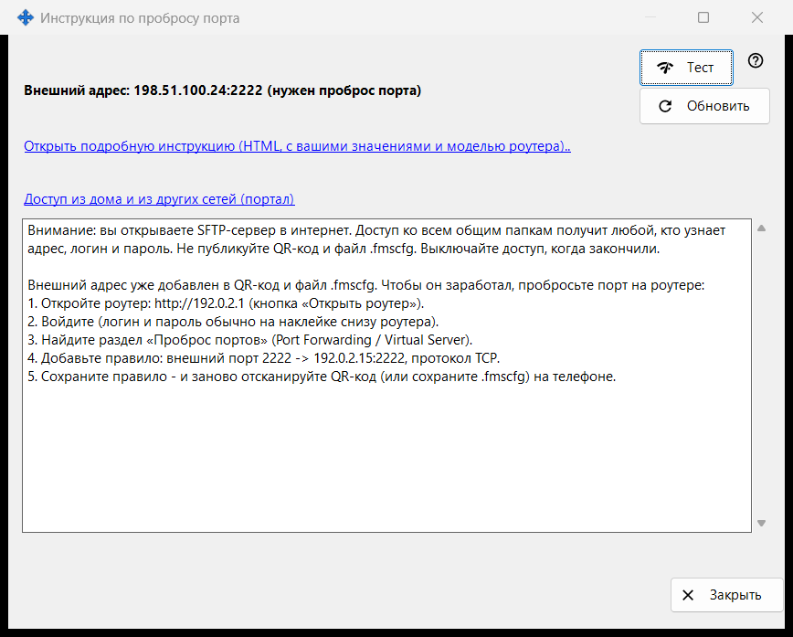
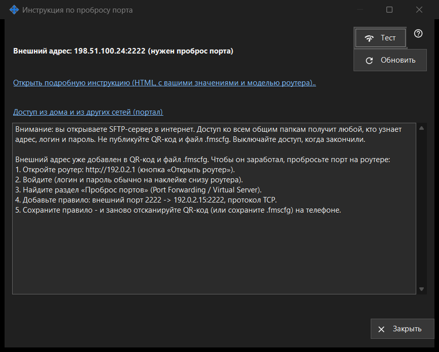

Инструкция по пробросу порта
Назначение
Помогает сделать раздачу доступной из-за пределов домашней сети. Окно показывает внешний адрес, открыт ли порт автоматически или нужен проброс на роутере, и предлагает проверку и подробную инструкцию. Оно открывается кнопкой «Как настроить доступ через интернет» главного окна.


Порядок действий
- Сначала запустите раздачу, иначе окно попросит об этом.
- Прочитайте строки состояния: доступно, за CGNAT или нужен проброс порта.
- Если проброс нужен, откройте подробную инструкцию и создайте правило на роутере.
- Нажмите «Тест», чтобы проверить адрес с этого ПК.
- Подтвердите проверкой с телефона на мобильных данных при выключенном Wi-Fi.
Элементы окна
Состояние
Окно определяет внешний адрес и сообщает одно из: «Доступно из интернета: ..», «Внешний адрес: .. (нужен проброс порта)», «Внешний адрес неизвестен - узнайте в роутере.» или «За CGNAT - извне недоступно.». Если порт открыт автоматически (UPnP), настройка роутера не нужна, но подтвердить работу может только телефон на мобильных данных. «Обновить» повторяет определение.
Роутер и инструкции
Строка роутера показывает его адрес или «Определяем роутер..», пока идёт поиск. Ссылка «Открыть подробную инструкцию (HTML, с вашими значениями и моделью роутера)..» открывает локальную HTML-инструкцию; если её не удалось открыть, окно сообщает об этом. Ссылка «Доступ из дома и из других сетей (портал)» открывает в браузере соответствующую страницу справочного портала.
Тест
Проверяет внешний адрес с этого ПК и сообщает «SFTP-сервер доступен: ..», «Порт открыт, но SFTP не ответил: ..», закрытое соединение (возможно, достигнут предел подключений) или отсутствие ответа. Результат не окончателен: многие роутеры не принимают запрос на собственный внешний адрес изнутри, поэтому надёжно проверять с телефона на мобильных данных.
Безопасность
Открывая SFTP в интернет, вы даёте доступ ко всем общим папкам любому, кто узнает адрес, логин и пароль. Не публикуйте QR-код и файл .fmscfg и выключайте раздачу, когда закончили. «Закрыть» закрывает окно.
Настройки менеджера · Настройки общего доступа SFTP · Настройки сервера обмена